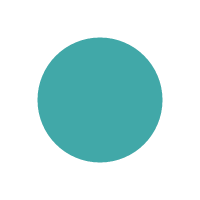
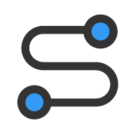
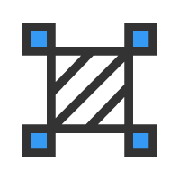
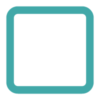
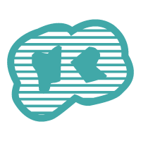
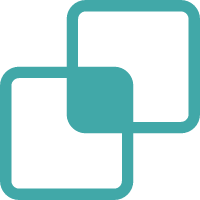
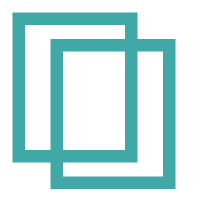

图层管理
高德地图
ArcGIS卫星影像
工具箱
绘图工具

绘制点

绘制线

绘制面
绘制圆

绘制矩形
样式设置
填充颜色
边框颜色
边框宽度
编辑工具
选择编辑
删除选中
清空绘制
已绘制图形
分析工具

缓冲区分析

相交分析

合并分析
空间查询
空间查询
清除查询
加载本地文件
加载 Shapefile
加载 GeoTIFF
🖐️
➕
➖
🏠
📏
📍
坐标: 待更新
比例尺: 待更新